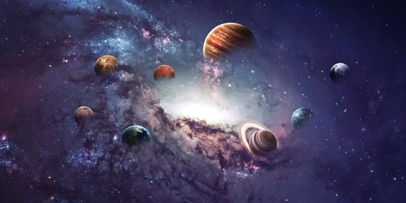

O que é Astronomia?
Astronomia é a ciência que estuda o universo, seus corpos celestes e os fenômenos que ocorrem fora da Atmosfera da terra. A Astronomia é dividida em alguns estudos, digamos assim. E estes estudos exploram e aprofundam a Astronomia, e estes incluem: Atrofísica, Cosmologia, Planetologia, Astrobiologia e outras áreas.